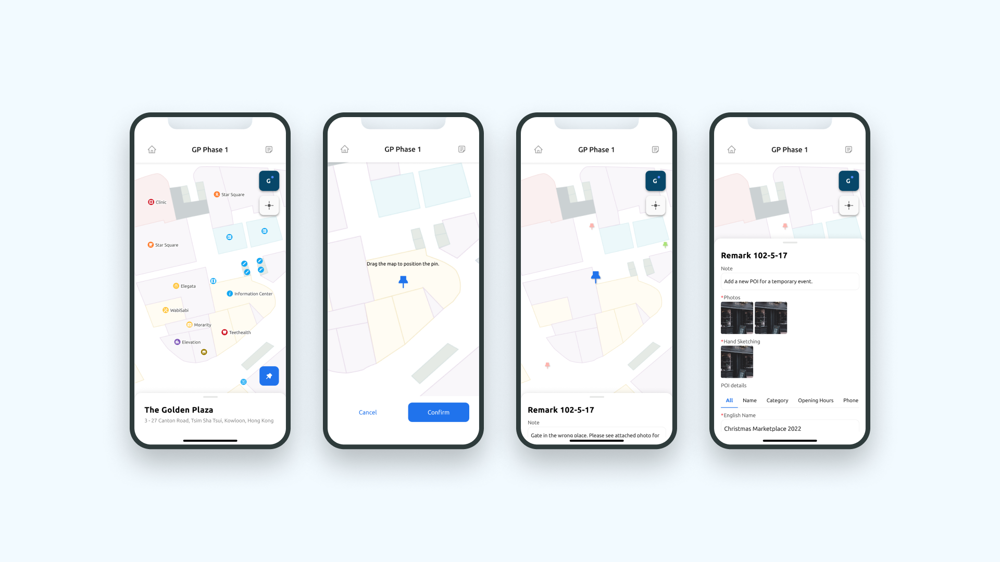
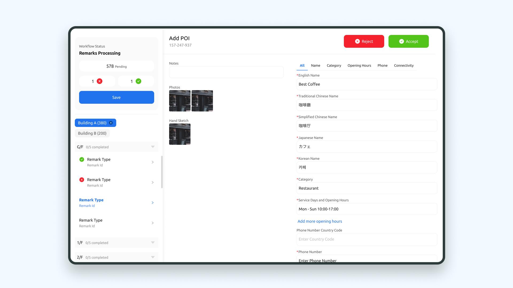

Map Production App
As a recognised Apple indoor map data provider, Mapxus depends on accurate, up-to-date map data across all venues it covers. When venues change layout or structure, field teams need to validate the digital maps on-site, and that validation process had no dedicated tooling. I led the research and design of the site validation app, and restructured the broader map production workflow around the findings.
Research

I conducted field research with production and validation teams across multiple regions, observing their workflows on-site and interviewing key stakeholders. I also reviewed the Apple Indoor Mapping Data Format (IMDF) standard to understand the technical requirements the tool needed to satisfy. The research identified three systemic problems: lack of transparency in the validation process, insufficient instruction at the point of task, and approval bottlenecks that slowed the entire pipeline.
Workflow mapping

I mapped the end-to-end production workflow, making the pain points and handoff failures visible across teams. This became the basis for aligning stakeholders on where intervention would have the most impact, and for sequencing the design work to address the highest-priority problems first.
Design
The core design challenge was giving field teams enough structure to work accurately without creating overhead that slowed them down. I designed a taxonomy of 7 remark types to standardise how validation issues were recorded, a "remark board" for team-wide visibility, and a progress tracker so both field teams and stakeholders could see status in real time. Simpler tools, better transparency, and clear instructions at every step.





Launch
The app launched across Hong Kong, Taiwan, and Japan, followed by training and structured feedback sessions with field teams. The new workflow reduced the production team's workload by 70% and measurably improved job satisfaction among validation staff.